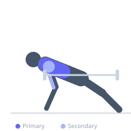
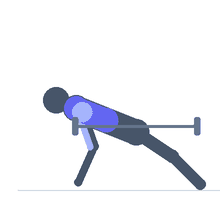

Exercise guide / Weighted Ring Push-Up
Weighted Ring Push-Up
A ring push-up performed with additional load, typically via a weight vest or a plate suspended from a dip belt. The gymnastic rings create an unstable surface that maximizes stabilizer recruitment, while the added external load increases the progressive overload on the pectoralis major and triceps beyond what bodyweight alone provides. This bridges the gap between bodyweight and barbell pressing.
Primary muscles
pectoralis major sternal
pectoralis major clavicular
Secondary muscles
triceps long head
deltoid anterior
Stabilizers
infraspinatus
supraspinatus
pectoralis minor
transverse abdominis
Equipment
Gymnastic Rings


Starting position
- Set rings low enough for push-up position (approximately 15–30 cm off the ground). Don a weight vest or attach a plate to a dip belt. Get into push-up position with hands in the rings, body straight.
Setup
- Set rings at appropriate height. Put on weight vest before getting into position. Ensure extra load is secure before beginning.
Steps
- Step 1: Establish push-up plank on the rings. Keep rings turned out slightly for shoulder health.
- Step 2: Lower the chest toward the ring level, controlling the inherent ring rotation.
- Step 3: Descend until chest is at ring height.
- Step 4: Press powerfully back to full arm extension, maintaining ring control.
Coaching cues
- Turn the rings out at the top for maximum shoulder stability
- Keep the rings close to the body — wide rings are harder to control
Breathing
- Inhale on descent, exhale on press.
Range of motion
- Full push-up range, chest to ring level at the bottom, full lockout at top.
Tempo
- 3-1-2-0
Common mistakes
- Adding weight before mastering unweighted ring push-ups
- Rings swinging out uncontrollably on descent
- Weight vest riding up during the movement, shifting center of gravity
Safety
- Master bodyweight ring push-ups with controlled descent/ascent before adding load
- Start with minimal added weight (5–10 kg) and progress conservatively
- Ensure ring straps are secure before beginning loaded sets
Training
- strength: 3–6 reps
- hypertrophy: 6–10 reps
- strength: 4–6 sets
- Rest: {'strength': 180, 'hypertrophy': 120}